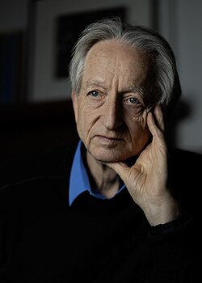
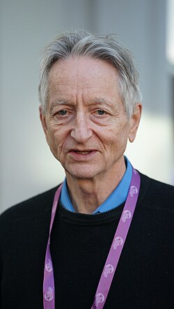

Geoffrey Hinton | |
|---|---|
 Hinton at his home in 2026 | |
| Born | Geoffrey Everest Hinton 6 December 1947 |
| Education | |
| Known for | |
| Spouses |
|
| Father | H. E. Hinton |
| Relatives |
|
| Awards |
|
| Scientific career | |
| Fields | |
| Institutions | |
| Thesis | Relaxation and Its Role in Vision (1977) |
| Christopher Longuet-Higgins | |
Doctoral students | |
Other notable students | |
| Website | Official website |
{kind=link}
Geoffrey Everest Hinton (born 6 December 1947) is a British-Canadian computer scientist, cognitive scientist, cognitive psychologist and Nobel Prize laureate known for his work on artificial neural networks, which earned him the title "the Godfather of AI".[8] He is University Professor Emeritus at the University of Toronto.
From 2013 to 2023, he divided his time working for Google Brain and the University of Toronto before publicly announcing his departure from Google in May 2023, citing concerns about the many risks of artificial intelligence (AI) technology.[9][10] In 2017, he co-founded and became the chief scientific advisor of the Vector Institute in Toronto.[11][12]
With David Rumelhart and Ronald J. Williams, Hinton was co-author of a highly cited paper published in 1986 that popularised the backpropagation algorithm for training multi-layer neural networks,[13] although they were not the first to propose the approach.[14] Hinton is viewed as a leading figure in the deep learning community.[20] The image-recognition milestone of the AlexNet designed in collaboration with his students Alex Krizhevsky[21] and Ilya Sutskever for the ImageNet challenge 2012[7] was a breakthrough in the field of computer vision.[22]
Hinton received the 2018 Turing Award, together with Yoshua Bengio and Yann LeCun for their work on deep learning.[23] They are sometimes referred to as the "Godfathers of Deep Learning"[24][25] and have continued to give public talks together.[26][27] He was also awarded, along with John Hopfield, the 2024 Nobel Prize in Physics for "foundational discoveries and inventions that enable machine learning with artificial neural networks".[28][29]
In May 2023, Hinton announced his resignation from Google to be able to "freely speak out about the risks of AI".[30] He has voiced concerns about deliberate misuse by malicious actors, technological unemployment, and existential risk from artificial general intelligence.[31] He noted that establishing safety guidelines will require cooperation among those competing in use of AI in order to avoid the worst outcomes.[32] After receiving the Nobel Prize, he called for urgent research into AI safety to figure out how to control AI systems smarter than humans.[33][34][35]
Education
Hinton was born on 6 December 1947[36] in Wimbledon in the United Kingdom and was educated at Clifton College in Bristol.[37] In 1967, he matriculated as an undergraduate student at King's College, Cambridge and, after switching between different fields such as natural sciences, history of art, and philosophy, eventually graduated with a Bachelor of Arts in experimental psychology in 1970.[36][38] He spent a year apprenticing carpentry before returning to academic studies.[39] From 1972 to 1975, he continued his study at the University of Edinburgh, where he was awarded a PhD in artificial intelligence in 1978 for research supervised by Christopher Longuet-Higgins, who favored the symbolic AI approach over the neural network approach.[38][40][41][39]
Career
After his PhD, Hinton initially worked at the University of Sussex and at the MRC Applied Psychology Unit. After having difficulty getting funding in Britain,[39] he worked in the US at the University of California, San Diego, and Carnegie Mellon University.[36] He was the founding director of the Gatsby Charitable Foundation Computational Neuroscience Unit at University College London.[36] He is currently[42] University Professor Emeritus in the Department of Computer Science at the University of Toronto, where he has been affiliated since 1987.[43]
Upon arrival in Canada, Geoffrey Hinton was appointed at the Canadian Institute for Advanced Research (CIFAR) in 1987 as a Fellow in CIFAR's first research program, Artificial Intelligence, Robotics & Society.[44] In 2004, Hinton and collaborators successfully proposed the launch of a new program at CIFAR, "Neural Computation and Adaptive Perception"[45] (NCAP), which today is named "Learning in Machines & Brains". Hinton would go on to lead NCAP for ten years.[46] Among the members of the program are Yoshua Bengio and Yann LeCun, with whom Hinton would go on to win the ACM A.M. Turing Award in 2018.[47] All three Turing winners continue to be members of the CIFAR Learning in Machines & Brains program.[48]
Hinton taught a free online course on Neural Networks on the education platform Coursera in 2012.[49] He co-founded DNNresearch Inc. in 2012 with his two graduate students, Alex Krizhevsky and Ilya Sutskever, at the University of Toronto's department of computer science. In March 2013, Google acquired DNNresearch Inc. for $44 million, and Hinton planned to "divide his time between his university research and his work at Google".[50][51][52]
In May 2023, Hinton publicly announced his resignation from Google. He explained his decision, saying he wanted to "freely speak out about the risks of AI" and added that part of him now regrets his life's work.[9][30]
Notable former PhD students and postdoctoral researchers from his group include Peter Dayan,[53] Sam Roweis,[53] Max Welling,[53] Richard Zemel,[40][1] Brendan Frey,[2] Radford M. Neal,[3] Yee Whye Teh,[4] Ruslan Salakhutdinov,[5] Ilya Sutskever,[6] Yann LeCun,[54] Alex Graves,[53] Zoubin Ghahramani,[53] and Peter Fitzhugh Brown.[55]
Research
Hinton's research concerns the use of neural networks for machine learning, memory, perception, and symbol processing. He has written or co-written more than 200 peer-reviewed publications.[56][57]
In the 1980s, Hinton was part of the "Parallel Distributed Processing" group at Carnegie Mellon University, which included notable scientists like Terrence Sejnowski, Francis Crick, David Rumelhart, and James McClelland. This group favoured the connectionist approach during the AI winter. Their findings were published in a two-volume set.[58][59] The connectionist approach adopted by Hinton suggests that capabilities in areas like logic and grammar can be encoded into the parameters of neural networks, and that neural networks can learn them from data. Symbolists on the other side advocated for explicitly programming knowledge and rules into AI systems.[8]
In 1985, Hinton co-invented Boltzmann machines with David Ackley and Terry Sejnowski.[60] His other contributions to neural network research include distributed representations, time delay neural network, mixtures of experts, Helmholtz machines and product of experts.[61] An accessible introduction to Geoffrey Hinton's research can be found in his articles in Scientific American in September 1992 and October 1993.[62] In 1995, Hinton and colleagues proposed the wake-sleep algorithm, involving a neural network with separate pathways for recognition and generation, being trained with alternating "wake" and "sleep" phases.[63] In 2007, Hinton coauthored an unsupervised learning paper titled Unsupervised learning of image transformations.[64] In 2008, he developed the visualization method t-SNE with Laurens van der Maaten.[65][66] While Hinton was a postdoc at UC San Diego, David Rumelhart, Hinton and Ronald J. Williams applied the backpropagation algorithm to multi-layer neural networks. Their experiments showed that such networks can learn useful internal representations of data.[13] In a 2018 interview,[67] Hinton said that "David Rumelhart came up with the basic idea of backpropagation, so it's his invention." Although this work was important in popularising backpropagation, it was not the first to suggest the approach.[14] Reverse-mode automatic differentiation, of which backpropagation is a special case, was proposed by Seppo Linnainmaa in 1970, and Paul Werbos proposed to use it to train neural networks in 1974.[14]
In 2017, Hinton co-authored two open-access research papers about capsule neural networks, extending the concept of "capsule" introduced by Hinton in 2011. The architecture aims to better model part-whole relationships within objects in visual data.[68][69] In 2021, Hinton presented GLOM, a speculative architecture idea also aiming to improve image understanding by modeling part-whole relationships in neural networks.[70] In 2021, Hinton co-authored a widely cited paper proposing a framework for contrastive learning in computer vision.[71] The technique involves pulling together representations of augmented versions of the same image, and pushing apart dissimilar representations.[71]
At the 2022 Conference on Neural Information Processing Systems (NeurIPS), Hinton introduced a new learning algorithm for neural networks that he calls the "Forward-Forward" algorithm. The idea is to replace the traditional forward-backwards passes of backpropagation with two forward passes, one with positive (i.e. real) data and the other with negative data that could be generated solely by the network.[72][73] The Forward-Forward algorithm is well-suited for what Hinton calls "mortal computation", where the knowledge learned is not transferable to other systems and thus dies with the hardware, as can be the case for certain analog computers used for machine learning.[74][8]
Honours and awards
Hinton is a Fellow of the US Association for the Advancement of Artificial Intelligence (FAAAI) since 1990.[75] He was elected a Fellow of the Royal Society of Canada (FRSC) in 1996,[76] and then a Fellow of the Royal Society of London (FRS) in 1998.[77] He was the first winner of the Rumelhart Prize in 2001.[78] According to the Royal Society:
Geoffrey Hinton is distinguished for his work on artificial neural nets, especially how they can be designed to learn without the aid of a human teacher. This may well be the start of autonomous intelligent brain-like machines. He has compared effects of brain damage with effects of losses in such a net, and found striking similarities with human impairment, such as for recognition of names and losses of categorisation. His work includes studies of mental imagery, and inventing puzzles for testing originality and creative intelligence.[79]
In 2001, Hinton was awarded an honorary Doctor of Science (DSc) degree from the University of Edinburgh.[38][80] He was awarded as International Honorary Member of the American Academy of Arts and Sciences in 2003.[81] Also, in this year he was elected a Fellow of the US Cognitive Science Society.[82] He was the 2005 recipient of the IJCAI Award for Research Excellence lifetime-achievement award.[83] He was awarded the 2011 Herzberg Canada Gold Medal for Science and Engineering.[84] In that same year, he also was awarded an honorary DSc degree from the University of Sussex[38] In 2012, he received the Canada Council Killam Prize in Engineering. In 2013, he was awarded an honorary doctorate from the Université de Sherbrooke.[38][85] Hinton was elected an Honorary Foreign Member of the Spanish Royal Academy of Engineering in 2015.[38]
{kind=link}

In 2016, Hinton was elected an International Member of the US National Academy of Engineering "for contributions to the theory and practice of artificial neural networks and their application to speech recognition and computer vision".[86][87] He received the 2016 IEEE/RSE Wolfson James Clerk Maxwell Award.[88] In 2016, he furthermore won the BBVA Foundation Frontiers of Knowledge Award in the Information and Communication Technologies category, "for his pioneering and highly influential work" to endow machines with the ability to learn.[89]
Together with Yann LeCun and Yoshua Bengio, Hinton won the 2018 Turing Award for conceptual and engineering breakthroughs that have made deep neural networks a critical component of computing.[90][91][92] Also in 2018, he became a Companion of the Order of Canada (CC).[93] In 2021, he received the Dickson Prize in Science from the Carnegie Mellon University[94] and in 2022 the Princess of Asturias Award in the Scientific Research category, along with Yann LeCun, Yoshua Bengio, and Demis Hassabis.[95] In the same year, Hinton received an Honorary DSc degree from the University of Toronto.[38] In 2023, he was named an ACM Fellow,[96] elected an International Member of the US National Academy of Sciences,[97] and received Lifeboat Foundation's 2023 Guardian Award along with Ilya Sutskever.[98]
In 2024, he was jointly awarded the Nobel Prize in Physics with John Hopfield "for foundational discoveries and inventions that enable machine learning with artificial neural networks."[99] His development of the Boltzmann machine was explicitly mentioned in the citation.[28][100] When the New York Times reporter Cade Metz asked Hinton to explain in simpler terms how the Boltzmann machine could "pretrain" backpropagation networks, Hinton quipped that Richard Feynman reportedly said: "Listen, buddy, if I could explain it in a couple of minutes, it wouldn't be worth the Nobel Prize."[101] That same year, he received the VinFuture Prize grand award alongside Yoshua Bengio, Yann LeCun, Jen-Hsun Huang, and Fei-Fei Li for groundbreaking contributions to neural networks and deep learning algorithms.[102]
German AI researcher Jürgen Schmidhuber contended that Hinton and others in the field did not appropriately credit existing research, and argued that foundational work by Paul Werbos and Shun-Ichi Amari in the 1970s on backpropagation and neural networks was insufficiently acknowledged.[103][104]
In 2025 he was awarded the Queen Elizabeth Prize for Engineering jointly with Yoshua Bengio, Bill Dally, John Hopfield, Yann LeCun, Jen-Hsun Huang and Fei-Fei Li.[105][106] He was also awarded the King Charles III Coronation Medal.[107] In 2025, he was also named the recipient of the Sandford Fleming Medal, awarded by the Royal Canadian Institute for Science for excellence in science communication.[108] He received an honorary Doctor of Science degree from Harvard University in 2026.[109]
Views
Risks of artificial intelligence
| External videos | |
|---|---|
| Geoffrey Hinton shares his thoughts on AI's benefits and dangers, 60 Minutes YouTube video |
{kind=link}
In 2023, Hinton expressed concerns about the rapid progress of AI.[31][30] He had previously believed that artificial general intelligence (AGI) was "30 to 50 years or even longer away."[30] However, in a March 2023 interview with CBS, he said that "general-purpose AI" might be fewer than 20 years away and could bring about changes "comparable in scale with the industrial revolution or electricity."[31]
In an interview with The New York Times published on 1 May 2023,[30] Hinton announced his resignation from Google so he could "talk about the dangers of AI without considering how this impacts Google."[110] He noted that "a part of him now regrets his life's work".[30][10]
In early May 2023, Hinton said in an interview with the BBC that AI might soon surpass the information capacity of the human brain. He described some of the risks posed by these chatbots as "quite scary". Hinton explained that chatbots can learn independently and share knowledge, so that whenever one copy acquires new information, it is automatically disseminated to the entire group, allowing AI chatbots to accumulate knowledge far beyond the capacity of any individual.[111] In 2025, he said "My greatest fear is that, in the long run, it'll turn out that these kind of digital beings we're creating are just a better form of intelligence than people. […] We'd no longer be needed. […] If you want to know how it's like not to be the apex intelligence, ask a chicken.[112]
Existential risk from AGI
Hinton has expressed concerns about the possibility of an AI takeover, stating that "it's not inconceivable" that AI could "wipe out humanity".[31] Hinton said in 2023 that AI systems capable of intelligent agency would be useful for military or economic purposes.[113] He worries that generally intelligent AI systems could "create sub-goals" that are unaligned with their programmers' interests.[114] He says that AI systems may become power-seeking or prevent themselves from being shut off, not because programmers intended them to, but because those sub-goals are useful for achieving later goals.[111] In particular, Hinton says "we have to think hard about how to control" AI systems capable of self-improvement.[115]
Catastrophic misuse
Hinton reports concerns about deliberate misuse of AI by malicious actors, stating that "it is hard to see how you can prevent the bad actors from using [AI] for bad things."[30] In 2017, Hinton called for an international ban on lethal autonomous weapons.[116] In 2025, in an interview, Hinton cited the use of AI by bad actors to create lethal viruses one of the greatest existential threats posed in the short term. "It just requires one crazy guy with a grudge...you can now create new viruses relatively cheaply using AI. And you don't need to be a very skilled molecular biologist to do it."[117]
Economic impacts
Hinton was previously optimistic about the economic effects of AI, noting in 2018 that: "The phrase 'artificial general intelligence' carries with it the implication that this sort of single robot is suddenly going to be smarter than you. I don't think it's going to be that. I think more and more of the routine things we do are going to be replaced by AI systems."[118] Hinton had also argued that AGI would not make humans redundant: "[AI in the future is] going to know a lot about what you're probably going to want to do... But it's not going to replace you."[118]
In 2023, however, Hinton became "worried that AI technologies will in time upend the job market" and take away more than just "drudge work".[30] He said in 2024 that the British government would have to establish a universal basic income to deal with the impact of AI on inequality.[119] In Hinton's view, AI will boost productivity and generate more wealth. But unless the government intervenes, it will only make the rich richer and hurt the people who might lose their jobs. "That's going to be very bad for society," he said.[120]
In December 2024, he had become somewhat more pessimistic, saying there was a "10 to 20 per cent chance" that AI would cause human extinction within the next three decades (he had previously suggested a 10% chance, without a timescale).[121] He expressed surprise at the speed with which AI was advancing, and said that most experts expected AI to advance, probably in the next 20 years, to be "smarter than people ... a scary thought. ... So just leaving it to the profit motive of large companies is not going to be sufficient to make sure they develop it safely. The only thing that can force those big companies to do more research on safety is government regulation."[121] Another "godfather of AI", Yann LeCun, disagreed, saying AI "could actually save humanity from extinction".[121]
Politics
Hinton is a socialist.[122] He moved from the US to Canada in part due to disillusionment with Ronald Reagan–era politics and disapproval of military funding of artificial intelligence.[39]
In August 2024, Hinton co-authored a letter with Yoshua Bengio, Stuart Russell, and Lawrence Lessig in support of SB 1047, a California AI safety bill that would require companies training models which cost more than US$100 million to perform risk assessments before deployment. They said the legislation was the "bare minimum for effective regulation of this technology."[123][124]
Personal life
Hinton's first wife, Rosalind Zalin, died of ovarian cancer in 1994; his second wife, Jacqueline "Jackie" Ford, died of pancreatic cancer in 2018.[8][125]
Hinton is the great-great-grandson of the mathematician and educator Mary Everest Boole and her husband, the logician George Boole.[126] George Boole's work eventually became one of the foundations of modern computer science. Another great-great-grandfather of his was the surgeon and author James Hinton,[127] who was the father of the mathematician Charles Howard Hinton.
Hinton's father was the entomologist Howard Hinton.[36][128] His middle name comes from another relative, George Everest, the Surveyor General of India after whom the mountain is named.[39] He is the nephew of the economist Colin Clark,[129] and nuclear physicist Joan Hinton, one of the two female physicists at the Manhattan Project, was his first cousin once removed.[130]
Hinton injured his back at age 19, which makes sitting painful for him. He has dealt with depression throughout his life.[131]
References
- ^ a b Zemel, Richard Stanley (1994). A minimum description length framework for unsupervised learning (PhD thesis). University of Toronto. OCLC 222081343. ProQuest 304161918.
- ^ a b Frey, Brendan John (1998). Bayesian networks for pattern classification, data compression, and channel coding (PhD thesis). University of Toronto. OCLC 46557340. ProQuest 304396112.
- ^ a b Neal, Radford (1995). Bayesian learning for neural networks (PhD thesis). University of Toronto. OCLC 46499792. ProQuest 304260778.
- ^ a b Whye Teh, Yee (2003). Bethe free energy and contrastive divergence approximations for undirected graphical models. utoronto.ca (PhD thesis). University of Toronto. hdl:1807/122253. OCLC 56683361. ProQuest 305242430. Archived from the original on 30 March 2023. Retrieved 30 March 2023.
- ^ a b Salakhutdinov, Ruslan (2009). Learning deep generative models (PhD thesis). University of Toronto. ISBN 978-0-494-61080-0. OCLC 785764071. ProQuest 577365583.
- ^ a b Sutskever, Ilya (2013). Training Recurrent Neural Networks. utoronto.ca (PhD thesis). University of Toronto. hdl:1807/36012. OCLC 889910425. ProQuest 1501655550. Archived from the original on 26 March 2023. Retrieved 30 March 2023.
- ^ a b Krizhevsky, Alex; Sutskever, Ilya; Hinton, Geoffrey E. (3 December 2012). "ImageNet classification with deep convolutional neural networks". In F. Pereira; C. J. C. Burges; L. Bottou; K. Q. Weinberger (eds.). NIPS'12: Proceedings of the 25th International Conference on Neural Information Processing Systems. Vol. 1. Curran Associates. pp. 1097–1105. Archived from the original on 20 December 2019. Retrieved 13 March 2018.
- ^ a b c d Rothman, Joshua (13 November 2023). "Why the Godfather of A.I. Fears What He's Built". The New Yorker. ISSN 0028-792X. Retrieved 29 July 2025.
{{cite magazine}}: CS1 maint: deprecated archival service (link) - ^ a b Douglas Heaven, Will (1 May 2023). "Deep learning pioneer Geoffrey Hinton quits Google". MIT Technology Review. Archived from the original on 1 May 2023. Retrieved 1 May 2023.
- ^ a b Taylor, Josh; Hern, Alex (2 May 2023). "'Godfather of AI' Geoffrey Hinton quits Google and warns over dangers of misinformation". The Guardian. Retrieved 8 October 2024.
- ^ Hernandez, Daniela (7 May 2013). "The Man Behind the Google Brain: Andrew Ng and the Quest for the New AI". Wired. Archived from the original on 8 February 2014. Retrieved 10 May 2013.
- ^ "Geoffrey E. Hinton – Google AI". Google AI. Archived from the original on 9 November 2019. Retrieved 15 June 2018.
- ^ a b Rumelhart, David E.; Hinton, Geoffrey E.; Williams, Ronald J. (9 October 1986). "Learning representations by back-propagating errors". Nature. 323 (6088): 533–536. Bibcode:1986Natur.323..533R. doi:10.1038/323533a0. ISSN 1476-4687. S2CID 205001834.
- ^ a b c Schmidhuber, Jürgen (1 January 2015). "Deep learning in neural networks: An overview". Neural Networks. 61: 85–117. arXiv:1404.7828. Bibcode:2015NN.....61...85S. doi:10.1016/j.neunet.2014.09.003. PMID 25462637. S2CID 11715509.
- ^ Mannes, John (14 September 2017). "Geoffrey Hinton was briefly a Google intern in 2012 because of bureaucracy – TechCrunch". TechCrunch. Archived from the original on 17 March 2020. Retrieved 28 March 2018.
- ^ Somers, James (29 September 2017). "Progress in AI seems like it's accelerating, but here's why it could be plateauing". MIT Technology Review. Archived from the original on 20 May 2018. Retrieved 28 March 2018.
- ^ Sorensen, Chris (2 November 2017). "How U of T's 'godfather' of deep learning is reimagining AI". University of Toronto News. Archived from the original on 6 April 2019. Retrieved 28 March 2018.
- ^ Sorensen, Chris (3 November 2017). "'Godfather' of deep learning is reimagining AI". Phys.org. Archived from the original on 13 April 2019. Retrieved 28 March 2018.
- ^ Lee, Adrian (18 March 2016). "Geoffrey Hinton, the 'godfather' of deep learning, on AlphaGo". Maclean's. Archived from the original on 6 March 2020. Retrieved 28 March 2018.
- ^ [15][16][17][18][19]
- ^ Gershgorn, Dave (18 June 2018). "The inside story of how AI got good enough to dominate Silicon Valley". Quartz. Archived from the original on 12 December 2019. Retrieved 5 October 2018.
- ^ Allen, Kate (17 April 2015). "How a Toronto professor's research revolutionized artificial intelligence". Toronto Star. Archived from the original on 17 April 2015. Retrieved 13 March 2018.
- ^ Chung, Emily (27 March 2019). "Canadian researchers who taught AI to learn like humans win $1M award". Canadian Broadcasting Corporation. Archived from the original on 26 February 2020. Retrieved 27 March 2019.
- ^ Ranosa, Ted (29 March 2019). "Godfathers of AI Win this Year's Turing Award And $1 Million". Tech Times. Archived from the original on 30 March 2019. Retrieved 5 November 2020.
- ^ Shead, Sam (27 March 2019). "The 3 'Godfathers' of AI Have Won the Prestigious $1M Turing Prize". Forbes. Archived from the original on 14 April 2020. Retrieved 5 November 2020.
- ^ Ray, Tiernan (9 March 2021). "Nvidia's GTC will feature deep learning cabal of LeCun, Hinton, and Bengio". ZDNet. Archived from the original on 19 March 2021. Retrieved 7 April 2021.
- ^ "50 Years at CMU: The Inaugural Raj Reddy Artificial Intelligence Lecture". Carnegie Mellon University. 18 November 2020. Archived from the original on 2 March 2022. Retrieved 2 March 2022.
- ^ a b "Press release: The Nobel Prize in Physics 2024". NobelPrize.org. Retrieved 8 October 2024.
- ^ "Geoffrey Hinton from University of Toronto awarded Nobel Prize in Physics". CBC News. The Associated Press. 8 October 2024. Retrieved 8 October 2024.
- ^ a b c d e f g h Metz, Cade (1 May 2023). "'The Godfather of A.I.' Leaves Google and Warns of Danger Ahead". The New York Times. ISSN 0362-4331. Archived from the original on 1 May 2023. Retrieved 1 May 2023.
- ^ a b c d Jacobson, Dana (host); Silva-Braga, Brook (reporter); Frosst, Nick; Hinton, Geoffrey (guests) (25 March 2023). "'Godfather of artificial intelligence' talks impact and potential of new AI". CBS Saturday Morning. Season 12. Episode 12. New York City: CBS News. Archived from the original on 28 March 2023. Retrieved 28 March 2023.
- ^ Erlichman, Jon (14 June 2024). "'50-50 chance' that AI outsmarts humanity, Geoffrey Hinton says". BNN Bloomberg. Retrieved 11 October 2024.
- ^ Hetzner, Christiaan. "New Nobel Prize winner, AI godfather Geoffrey Hinton, says he's proud his student fired OpenAI boss Sam Altman". Fortune. Retrieved 11 October 2024.
- ^ Coates, Jessica (9 October 2024). "Geoffrey Hinton warns of AI's growing danger after Nobel Prize win". The Independent. Retrieved 11 October 2024.
- ^ "Geoffrey Hinton – Facts – 2024". NobelPrize.org. Nobel Prize Outreach AB. Retrieved 24 December 2024.
- ^ a b c d e "Hinton, Prof. Geoffrey Everest". Who's Who (176th ed.). Oxford University Press. 2023. doi:10.1093/ww/9780199540884.013.20261. (Subscription or UK public library membership required.)
- ^ Onstad, Katrina (29 January 2018). "Mr. Robot". Toronto Life. Retrieved 24 December 2023.
- ^ a b c d e f g Curriculum Vitae Geoffrey E. Hinton - website of the Department of Computer Science at the University of Toronto
- ^ a b c d e Smith, Craig S. (23 June 2017). "The Man Who Helped Turn Toronto into a High-Tech Hotbed". The New York Times. Archived from the original on 27 January 2020. Retrieved 27 June 2017.
- ^ a b Geoffrey Hinton at the Mathematics Genealogy Project
- ^ Hinton, Geoffrey Everest (1977). Relaxation and its role in vision. Edinburgh Research Archive (PhD thesis). University of Edinburgh. hdl:1842/8121. OCLC 18656113. EThOS uk.bl.ethos.482889. Archived from the original on 30 March 2023. Retrieved 30 March 2023.

- ^ Hinton, Geoffrey E. (6 January 2020). "Curriculum Vitae" (PDF). University of Toronto: Department of Computer Science. Archived (PDF) from the original on 23 July 2020. Retrieved 30 November 2016.
- ^ "University of Toronto". discover.research.utoronto.ca. Retrieved 9 October 2024.
- ^ "How Canada has emerged as a leader in artificial intelligence". University Affairs. 6 December 2017. Retrieved 9 October 2024.
- ^ "Geoffrey Hinton Biography". CIFAR. Retrieved 8 October 2024.
- ^ "Geoffrey E Hinton - A.M. Turing Award Laureate". amturing.acm.org. Retrieved 9 October 2024.
- ^ "2018 ACM A.M. Turing Award Laureates". awards.acm.org. Retrieved 9 October 2024.
- ^ "CIFAR - Learning in Machines & Brains". CIFAR. Retrieved 8 October 2024.
- ^ "Neural Networks for Machine Learning". University of Toronto. Archived from the original on 31 December 2016. Retrieved 30 December 2016.
- ^ "U of T neural networks start-up acquired by Google" (Press release). Toronto, ON. 12 March 2013. Archived from the original on 8 October 2019. Retrieved 13 March 2013.
- ^ Kelly, Meghan (12 March 2013). "Google acquires voice and image research firm DNNresearch". VentureBeat. Retrieved 29 December 2024.
- ^ Taylor, Chloe. "'The Godfather of A.I.' warns of 'nightmare scenario' where artificial intelligence begins to seek power". Fortune. Retrieved 9 July 2025.
- ^ a b c d e Geoffrey Hinton. "Geoffrey Hinton's postdocs". University of Toronto. Archived from the original on 29 October 2020. Retrieved 11 September 2020.
- ^ "Yann LeCun's Research and Contributions". yann.lecun.com. Archived from the original on 3 March 2018. Retrieved 13 March 2018.
- ^ "A conversation with Renaissance Technologies CEO Peter Brown". goldmansachs.com. Retrieved 21 October 2024.
- ^ Geoffrey Hinton publications indexed by Google Scholar
- ^ Geoffrey Hinton publications indexed by the Scopus bibliographic database. (subscription required)
- ^ Parallel Distributed Processing: Explorations in the Microstructure of Cognition: Foundations. Vol. 1. MIT Press. 29 July 1987. ISBN 978-0-262-68053-0.
- ^ Parallel Distributed Processing: Explorations in the Microstructure of Cognition: Psychological and Biological Models. Vol. 2. MIT Press. 29 July 1987. ISBN 978-0-262-63110-5.
- ^ Ackley, David H; Hinton Geoffrey E; Sejnowski, Terrence J (1985), "A learning algorithm for Boltzmann machines", Cognitive science, Elsevier, 9 (1): 147–169
- ^ Hinton, Geoffrey E. "Geoffrey E. Hinton's Publications in Reverse Chronological Order". Archived from the original on 18 April 2020. Retrieved 15 September 2010.
- ^ "Stories by Geoffrey E. Hinton in Scientific American". Scientific American. Archived from the original on 17 October 2019. Retrieved 17 October 2019.
- ^ Hinton, Geoffrey; Dayan, Peter; Frey, Brendan; Neal, Radford (3 April 1995). "The wake-sleep algorithm for unsupervised neural networks" (PDF). Science. 268 (5214): 1158–1161. doi:10.1126/science.7761831. PMID 7761831.
- ^ Memisevic, Roland; Hinton, Geoffrey (2006). "Unsupervised Learning of Image Transformations" (PDF). IEEE CVPR.
- ^ "An Introduction to t-SNE with Python Example". KDNuggets. Retrieved 22 June 2024.
- ^ van der Maaten, Laurens; Hinton, Geoffrey (2008). "Visualizing Data using t-SNE" (PDF). Journal of Machine Learning Research.
- ^ Ford, Martin (2018). Architects of Intelligence: The truth about AI from the people building it. Packt Publishing. ISBN 978-1-78913-151-2.
- ^ Simonite, Tom. "Google's AI Wizard Unveils a New Twist on Neural Networks". Wired. ISSN 1059-1028. Retrieved 28 December 2025.
- ^ Geib, Claudia (11 February 2017). "We've finally created an AI network that's been decades in the making". Futurism. Archived from the original on 9 November 2017. Retrieved 3 May 2023.
- ^ "Geoffrey Hinton has a hunch about what's next for AI". MIT Technology Review. 16 April 2021. Retrieved 28 December 2025.
- ^ a b Chen, Ting; Kornblith, Simon; Norouzi, Mohammad; Hinton, Geoffrey (13 July 2020). "A simple framework for contrastive learning of visual representations". ICML. 119: 1597–1607.
- ^ Hinton, Geoffrey (2022). "The Forward-Forward Algorithm: Some Preliminary Investigations". arXiv:2212.13345 [cs.LG].
- ^ "Hinton's Forward Forward Algorithm is the New Way Ahead for Neural Networks". Analytics India Magazine. 16 December 2022. Retrieved 22 June 2024.
- ^ Hinton, Geoffrey (2022). "The Forward-Forward Algorithm: Some Preliminary Investigations". arXiv:2212.13345 [cs.LG].
- ^ "Elected AAAI Fellows". AAAI.
- ^ Geoffrey Hinton, FRSC, Awarded 2024 Nobel Prize in Physics - website of the Royal Society of Canada
- ^ "Professor Geoffrey Hinton FRS". Royal Society. London. 1998. Archived from the original on 3 November 2015. One or more of the preceding sentences incorporates text from the royalsociety.org website where:
"All text published under the heading 'Biography' on Fellow profile pages is available under Creative Commons Attribution 4.0 International License." --"Royal Society Terms, conditions and policies". Archived from the original on 11 November 2016. Retrieved 9 March 2016.
- ^ "Current and Previous Recipients". The David E. Rumelhart Prize. Archived from the original on 2 March 2017.
- ^ "Professor Geoffrey Hinton FRS". The Royal Society. Retrieved 2 January 2026.
- ^ "Distinguished Edinburgh graduate receives ACM A.M. Turing Award". The University of Edinburgh. 2 April 2019. Archived from the original on 14 July 2019. Retrieved 9 April 2019.
- ^ "Geoffrey E. Hinton". American Academy of Arts and Sciences. 26 April 2025.
- ^ "Fellows". Cognitive Science Society.
- ^ "IJCAI-22 Award for Research Excellence". International Joint Conference on Artificial Intelligence. Archived from the original on 20 December 2020. Retrieved 5 August 2021.
- ^ "Artificial intelligence scientist gets M prize". CBC News. 14 February 2011. Archived from the original on 17 February 2011. Retrieved 14 February 2011.
- ^ "Geoffrey Hinton, keystone researcher in artificial intelligence, visits the Université de Sherbrooke". Université de Sherbrooke. 19 February 2014. Archived from the original on 21 February 2021.
- ^ "National Academy of Engineering Elects 80 Members and 22 Foreign Members". National Academy of Engineering. 8 February 2016. Archived from the original on 13 May 2018. Retrieved 13 February 2016.
- ^ "Professor Geoffrey E. Hinton". National Academy of Engineering.
- ^ "2016 IEEE Medals and Recognitions Recipients and Citations" (PDF). Institute of Electrical and Electronics Engineers. Archived from the original (PDF) on 14 November 2016. Retrieved 7 July 2016.
- ^ "The BBVA Foundation bestows its award on the architect of the first machines capable of learning the way people do". BBVA Foundation. 17 January 2017. Archived from the original on 4 December 2020. Retrieved 21 February 2021.
- ^ "Vector Institutes Chief Scientific Advisor Dr.Geoffrey Hinton Receives ACM A.M. Turing Award Alongside Dr.Yoshua Bengio and Dr.Yann Lecun". Vector Institute for Artificial Intelligence. 27 March 2019. Archived from the original on 27 March 2019. Retrieved 27 March 2019.
- ^ Metz, Cade (27 March 2019). "Three Pioneers in Artificial Intelligence Win Turing Award". The New York Times. Archived from the original on 27 March 2019. Retrieved 27 March 2019.
- ^ "Fathers of the Deep Learning Revolution Receive ACM A.M. Turing Award – Bengio, Hinton and LeCun Ushered in Major Breakthroughs in Artificial Intelligence". Association for Computing Machinery. 27 March 2019. Archived from the original on 27 March 2019. Retrieved 27 March 2019.
- ^ "Governor General Announces 103 New Appointments to the Order of Canada, December 2018". The Governor General of Canada. 27 December 2018. Archived from the original on 19 November 2019. Retrieved 7 June 2020.
- ^ University, Carnegie Mellon. "Past Winners – Dickson Prize in Science – Carnegie Mellon University". www.cmu.edu.
- ^ "Geoffrey Hinton, Yann LeCun, Yoshua Bengio and Demis Hassabis – Laureates – Princess of Asturias Awards". Princess of Asturias Awards. 2022. Archived from the original on 15 June 2022. Retrieved 3 May 2023.
- ^ "Geoffrey E Hinton". awards.acm.org. Retrieved 26 January 2024.
- ^ "Geoffrey E. Hinton". National Academy of Sciences.
- ^ "Lifeboat Foundation Guardian Award 2023: Geoffrey Hinton & Ilya Sutskever: Teacher and Student". Lifeboat Foundation. Retrieved 3 March 2025.
- ^ McClelland, James L. (17 April 2025). "Profile of John Hopfield and Geoffrey Hinton: 2024 Nobel laureates in physics". Proceedings of the National Academy of Sciences of the United States of America. 122 (16) e2423094122. Bibcode:2025PNAS..12223094M. doi:10.1073/PNAS.2423094122. PMC 12037045. PMID 40244659.
- ^ Nobel Prize (8 October 2024). Announcement of the 2024 Nobel Prize in Physics. Retrieved 8 October 2024 – via YouTube.
- ^ Metz, Cade (8 October 2024). "How Does It Feel to Win a Nobel Prize? Ask the 'Godfather of A.I.'". The New York Times. Retrieved 10 October 2024.
- ^ "The VinFuture 2024 Grand Prize honours 5 scientists for transformational contributions to the advancement of deep learning". Việt Nam News. 7 December 2024.
- ^ Wadhwa, Vivek. "The controversy surrounding AI pioneer Geoffrey Hinton's Nobel Prize misses the point". Fortune. Retrieved 8 February 2026.
- ^ Taylor, Josh (7 May 2023). "Rise of artificial intelligence is inevitable but should not be feared, 'father of AI' says". The Guardian. ISSN 0261-3077. Retrieved 8 February 2026.
- ^ "Modern Machine Learning". Queen Elizabeth Prize for Engineering.
- ^ FT Live (6 November 2025). The Minds of Modern AI: Jensen Huang, Geoffrey Hinton, Yann LeCun & the AI Vision of the Future. Retrieved 9 November 2025 – via YouTube.
- ^ "Geoffrey Hinton". The Governor General of Canada. Retrieved 12 August 2025.
- ^ Boyce, Carrie (9 February 2025). "RCIScience Announces Professor Geoffrey Hinton as latest Sandford Fleming Medal Recipient". Royal Canadian Institute for Science. Retrieved 12 March 2026.
- ^ "Harvard Awards Five Honorary Degrees Across Science, Literature, and the Arts". The Harvard Crimson. 28 May 2025. Retrieved 30 May 2026.
- ^ Hinton, Geoffrey [@geoffreyhinton] (1 May 2023). "In the NYT today, Cade Metz implies that I left Google so that I could criticize Google. Actually, I left so that I could talk about the dangers of AI without considering how this impacts Google. Google has acted very responsibly" (Tweet). Retrieved 2 May 2023 – via Twitter.
- ^ a b Kleinman, Zoe; Vallance, Chris (2 May 2023). "AI 'godfather' Geoffrey Hinton warns of dangers as he quits Google". BBC News. Archived from the original on 2 May 2023. Retrieved 2 May 2023.
- ^ Hinton, Geoffrey (27 May 2025). "Humans 'no longer needed' – Godfather of AI" (Interview). Interviewed by Espiner, Guyon. RNZ. 29,30 minutes in. Retrieved 31 May 2025.
- ^ Hinton, Geoffrey (25 March 2023). "Full interview: 'Godfather of artificial intelligence' talks impact and potential of AI" (Interview). Interviewed by Silva-Braga, Brook. New York City: CBS News. Event occurs at 31:45. Archived from the original on 2 May 2023 – via YouTube. Excerpts were broadcast in Jacobson & Silva-Braga (2023), but the full interview was only published online.
- ^ Hinton & Silva-Braga 2023, 31:55.
- ^ Hinton & Silva-Braga 2023, 35:48.
- ^ "Call for an International Ban on the Weaponization of Artificial Intelligence". University of Ottawa: Centre for Law, Technology and Society. Archived from the original on 8 April 2023. Retrieved 1 May 2023.
- ^ The Diary Of A CEO (16 June 2025). Godfather of AI: I Tried to Warn Them, But We've Already Lost Control! Geoffrey Hinton. Retrieved 6 August 2025 – via YouTube.
- ^ a b Wiggers, Kyle (17 December 2018). "Geoffrey Hinton and Demis Hassabis: AGI is nowhere close to being a reality". VentureBeat. Archived from the original on 21 July 2022. Retrieved 21 July 2022.
- ^ "AI 'godfather' says universal basic income will be needed". www.bbc.com. 18 May 2024. Retrieved 15 June 2024.
- ^ Varanasi, Lakshmi (18 May 2024). "AI 'godfather' Geoffrey Hinton says he's 'very worried' about AI taking jobs and has advised the British government to adopt a universal basic income". Business Insider Africa. Retrieved 15 June 2024.
- ^ a b c Milmo, Dan (27 December 2024). "'Godfather of AI' shortens odds of the technology wiping out humanity over next 30 years". The Guardian.
- ^ Hern, Alex (4 May 2023). "Bernie Sanders, Elon Musk and White House Seeking My Help, Says 'Godfather of AI'". The Guardian. Retrieved 1 May 2025.
- ^ Pillay, Tharin; Booth, Harry (7 August 2024). "Exclusive: Renowned Experts Pen Support for California's Landmark AI Safety Bill". TIME. Retrieved 21 August 2024.
- ^ "Letter from renowned AI experts". SB 1047 – Safe & Secure AI Innovation. Retrieved 21 August 2024.
- ^ Scanlan, Chip (6 June 2024). "How a reporter prepped to understand A.I. and the man who helped invent it". Nieman Foundation (Has the full 2023 New Yorker article with annotations). Retrieved 26 October 2024.
- ^ Martin, Alexander (18 March 2021). "Geoffrey Hinton: The story of the British 'Godfather of AI' – who's not sat down since 2005". Sky News. Archived from the original on 19 March 2021. Retrieved 7 April 2021.
- ^ Roberts, Siobhan (27 March 2004). "The Isaac Newton of logic". The Globe and Mail. Archived from the original on 3 May 2023. Retrieved 3 May 2023.
- ^ Salt, George (1978). "Howard Everest Hinton. 24 August 1912-2 August 1977". Biographical Memoirs of Fellows of the Royal Society. 24 (24): 150–182. doi:10.1098/rsbm.1978.0006. ISSN 0080-4606. S2CID 73278532.
- ^ Shute, Joe (26 August 2017). "The 'Godfather of AI' on making machines clever and whether robots really will learn to kill us all?". The Daily Telegraph. Archived from the original on 27 December 2017. Retrieved 20 December 2017.
- ^ Godfather of AI: I Tried to Warn Them, But We've Already Lost Control! Geoffrey Hinton. The Diary of a CEO. 16 June 2025. Event occurs at 01:20:40. Retrieved 21 June 2025 – via YouTube.
- ^ Luc Rinaldi (16 November 2023). "Why Geoffrey Hinton is sounding the alarm about AI". Toronto Life.
Further reading
- Rothman, Joshua (20 November 2023). "Why the Godfather of A.I. Fears What He's Built". The New Yorker. pp. 29–39.